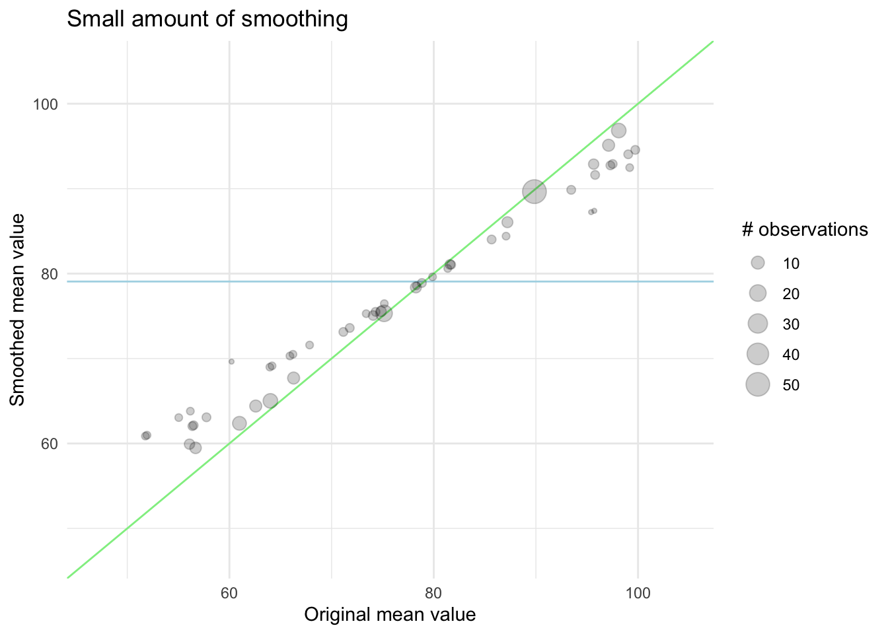
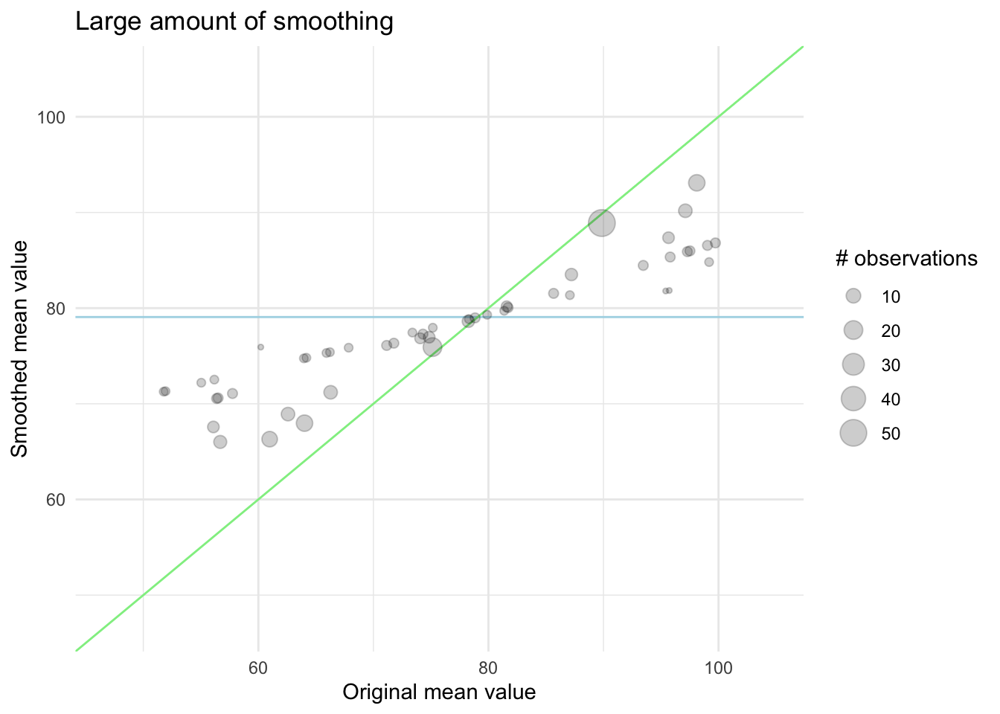

# A tibble: 6 × 2
cuteness animal
<dbl> <chr>
1 1 dog
2 5 cat
3 9 cat
4 3 cat
5 2 dog
6 4 horse 25 Target Encoding
Target encoding (also called mean encoding, likelihood encoding, or impact encoding) is a method that maps the categorical levels to probabilities of your target variable (Micci-Barreca 2001). This method is in some ways quite similar to frequency encoding that we saw in Chapter 24. We are taking a single categorical variable, and turning it into a single numeric categorical variable.
This is a trained and supervised method since we are using the outcome of our modeling problem to guide the way this method is estimated. In the most simple formulation, target encoding is done by replacing each level of a categorical variable with the mean of the target variable within said level. The target variable will typically be the outcome, but that is not necessarily a requirement.
Consider the following example data set
If we were to calculate target encoding on animal using cuteness as the target, we will first need to calculate the mean of cuteness within each
# A tibble: 3 × 3
animal math mean
<chr> <chr> <dbl>
1 dog (1 + 2) / 2 1.5
2 cat (5 + 9 + 3) / 3 5.67
3 horse 4 / 1 4 Taking these means and we can now use them as an encoding
# A tibble: 6 × 2
cuteness animal
<dbl> <dbl>
1 1 1.5
2 5 5.67
3 9 5.67
4 3 5.67
5 2 1.5
6 4 4 From the above example, we notice 3 things. Firstly, once the calculations have been done, applying the encoding to new data is a fairly easy procedure as it amounts to a left join. Secondly, some classes have different numbers of observations associated with them. The "horse" class only has 1 observation in this data set, how confident are we that the mean calculated from this value is as valid as the mean that was calculated over the 3 values for the "cat" class? Lastly, how will this method handle unseen levels?
Let us think about the unseen levels first. If we have no information about a given class. This could happen in two different ways. Because the level is truly unseen because the company was just started and wasn’t known in the training data set. Or because the known level wasn’t observed, e.i. no Sundays in the training data set. Regardless of the reason, we will want to give these levels a baseline number. For this, we can use the mean value of the target, across all of the training data set. So for our toy example, we have a mean cuteness of 4, which we will assign to any new animal.
This value is by no means a good value, but it is an educated guess that can be calculated with ease. This also means that regardless of the distribution of the target, these values can be calculated.
The way we handle unseen levels gives us a clue as to how we can deal with low-frequency counts. Knowing that the global mean of the target is our baseline when we have no information. We can combine the level mean with the global mean, in accordance with how many observations we observe. If we have a lot of observations in a level, we will let the global mean have little influence, and if there are fewer observations we will let the global mean have a higher influence.
We can visualize this effect in the following charts. First, we have an example of what happens with a smaller amount of smoothing. The points are mostly along the diagonal. Remember that if we didn’t do this, all the points would be along the diagonal regardless of their size.

In this next chart, we see the effect of a higher amount of smoothing, now the levels with fewer observations are pulled quite a bit closer to the global mean.

The exact way this is done will vary from method to method, and the strength of this smoothing can and should be tuned as there isn’t an empirical best way to choose it.
We need to talk about the subtleties. There is plain mean encoding, and then there is all the variants,
regularization
https://embed.tidymodels.org/reference/step_lencode_glm.html https://embed.tidymodels.org/reference/step_lencode_mixed.html https://embed.tidymodels.org/reference/step_lencode_mixed.html https://contrib.scikit-learn.org/category_encoders/targetencoder.html
https://dl.acm.org/doi/10.1145/507533.507538